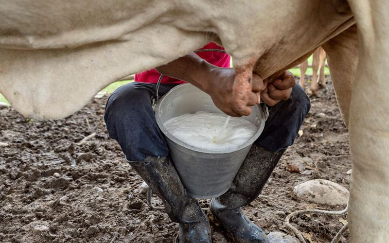

Leche
$1.800 / litro
Leche fresca de vaca, ordeñada cada mañana en la vereda El Retiro. Ideal para queseras, panaderías y restaurantes.
Consultar producto
$1.800 / litro
Leche fresca de vaca, ordeñada cada mañana en la vereda El Retiro. Ideal para queseras, panaderías y restaurantes.
Consultar producto